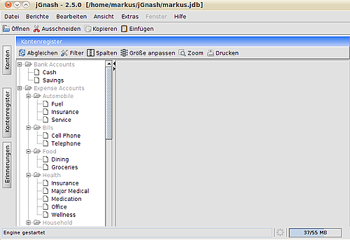
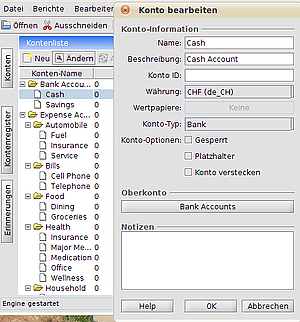
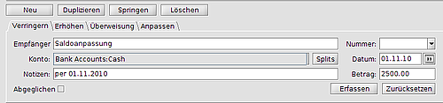
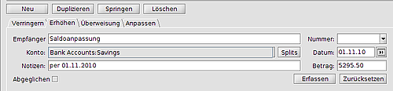
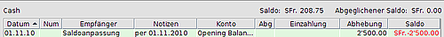
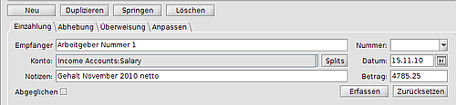
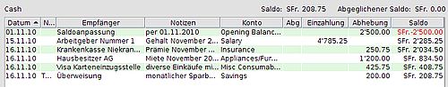
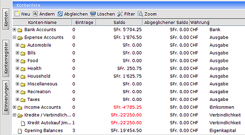

jGnash
Archivierte Anleitung
Dieser Artikel wurde archiviert, da er - oder Teile daraus - nur noch unter einer älteren Ubuntu-Version nutzbar ist. Diese Anleitung wird vom Wiki-Team weder auf Richtigkeit überprüft noch anderweitig gepflegt. Zusätzlich wurde der Artikel für weitere Änderungen gesperrt.
Zum Verständnis dieses Artikels sind folgende Seiten hilfreich:
jGnash  ist ein Programm zur privaten Kontenverwaltung mit einer deutschsprachigen Oberfläche. Das Programm ist in Java geschrieben und daher plattformunabhängig. Es unterstützt verschiedene Kontentypen sowie Waren und Wertpapiere und besitzt eine Erinnerungsfunktion. Die Daten werden im XML-Format
ist ein Programm zur privaten Kontenverwaltung mit einer deutschsprachigen Oberfläche. Das Programm ist in Java geschrieben und daher plattformunabhängig. Es unterstützt verschiedene Kontentypen sowie Waren und Wertpapiere und besitzt eine Erinnerungsfunktion. Die Daten werden im XML-Format  gespeichert und können auf Wunsch durch Verschlüsselung vor unbefugtem Zugriff geschützt werden.
gespeichert und können auf Wunsch durch Verschlüsselung vor unbefugtem Zugriff geschützt werden.
Voraussetzungen¶
JGnash erfordert eine Java-Laufzeitumgebung (JRE), welche mindestens der Version 1.6 (Java 6) oder neuer entsprechen sollte. Nach Anwenderberichten funktioniert das Programm unter Ubuntu 12.04 weder mit OpenJDK 6 noch mit OpenJDK 7. Dann sollte man Oracle Java installieren.
Installation¶
Eine Installation im eigentlichen Sinne findet nicht statt. Man lädt das neueste Version als Archivdatei von der Homepage  herunter, entpackt diese [1] und macht die Datei jgnash2.jar ausführbar [2].
herunter, entpackt diese [1] und macht die Datei jgnash2.jar ausführbar [2].
Erste Schritte¶
Wird jGnash das erste Mal geöffnet, muss man eine neue Datei anlegen ("Datei – neu"). Der Assistent "Neue Datei" führt durch die fünf Schritte der Einrichtung:
Datenbank Konfiguration
Standardwährung wählen
Verfügbare Währungen auswählen
zu erstellende Konten auswählen
Zusammenfassung
Die erste Oberfläche¶
 Am linken Rand des GUI sind drei hoch gestellte Schaltknöpfe:
"Erinnerungen": hier können regelmäßig wiederkehrende Buchungen erfasst werden, beim Start einer Session werden fällige Buchungen „erinnert“
"Kontenregister": mit diesem Button werden die Details eines angewählten Kontos angezeigt
"Konten": In diesem Bereich können Konten geändert, gelöscht oder hinzugefügt werden
Rechts neben den Buttons wird der Baum mit den vorhandenen Konten angezeigt. Ein Linksklick  auf ein Konto öffnet dann rechts davon des Kontoregister mit den Umsätzen. Bei Neueinrichtung einer Datenbank sollte hier alles leer sein. Der untere Teil dieses Fensters stellt die Erfassungsebene für Umsätze dar.
auf ein Konto öffnet dann rechts davon des Kontoregister mit den Umsätzen. Bei Neueinrichtung einer Datenbank sollte hier alles leer sein. Der untere Teil dieses Fensters stellt die Erfassungsebene für Umsätze dar.

Konten anpassen¶
Wählt man den Button "Konten" so werden alle vorhanden Konten rechts davon aufgelistet. Ein markiertes Konto kann nun mit den oben stehenden Menüpunkten geändert oder gelöscht werden, neue Konten können mit dem Befehl "neu" hinzugefügt werden. Jeweils bei "neu" oder "ändern" öffnet ein Detailfenster. In welchem die entsprechenden Details erfasst/geändert werden können.
Achtung: genau aufpassen bei der Zuteilung des Konto-Typs (teilt das Konto entweder in die Erfolgsrechnung oder die Bilanz ein) und bei der Gruppierungsangabe („Oberkonto“ – für die Sortierung im Kontorahmen)
Erste Schritte der Buchhaltung¶
In einem ersten Schritt wird man am besten die Kontosaldi der verwendeten Konten erfassen. Hierzu wählt man das Konto „Opening Balance“ aus und erfasst die erste Buchung
Bei dieser Buchung wurde ein Sollsaldo (Verringern) auf dem Cash Account per 01.11.2010 erstellt. Nach "Erfassen" wird auf dem Cash Account die Gegenbuchung ersichtlich sein.
Analog dazu kann mit der Registerkarte "Erhöhen" ein Habensaldo auf dem Savings Account erstellt werden:
Erfassung der Umsätze¶
In der Regel werden Rechnungen zu Lasten des Cash Accounts bezahlt, das monatliche Gehalt wird ebenfalls hier gutgeschrieben, Daueraufträge und Kreditkartenabrechnungen gehen über dieses Konto, und der verbleibende Saldo wird monatlich auf das Sparkonto übertragen. Um diese Umsätze im Kontenregister zu erfassen wählt man das zu bebuchende Konto aus. Als erste Buchung sehen wir die Saldoanpassung per 01.11.2010:
Das Konto weißt also einen Sollsaldo von CHF 2'500.00 auf. In diesem Beispiel wird nun als erstes der Eingang des Zahltages verbucht. Hierzu muss man das Register „Einzahlung“ anwählen, und den Button „neu“ drücken, Die Eingabemöglichkeiten in die Felder sind selbsterklärend.
Dazu noch die Mietzahlung (CHF 1'200.00, Registerkarte Abhebung) die Krankenkasse (CHF 250.75, Registerkarte Abhebung), die Kreditkartenrechnung (CHF 425.75, Register Abhebung) und den Übertrag auf das Savings Account (CHF 200, Register Überweisung)
Bei allen diesen Buchungen haben wir das entsprechende Gegenkonto im Aufklappfenster „Konto“ angewählt. Das Kontoregister des Cash Accounts sieht nun wie folgt aus
Der Kontoüberblick (Linker Button „Konten“ zeigt uns nun alle Kontosaldi auf, so dass wir daraus lesen können, wieviel Geld wurde für welche Kategorie ausgegeben
Feinheiten¶
Kredite und Verbindlichkeiten¶
Im Standardkontorahmen ist diese Gruppe noch nicht vorhanden. Sie kann in der Kontoliste über die Funktion "neu" angelegt werden. Der Konto-Typ muss Verbindlichkeit sein (kommt in die Bilanz) und die Unterordnung der Kredite / Verbindlichkeiten ist unter die Wurzel. Nun muss noch der Kredit in diese Kontogruppe eingebunden werden über die Funktion "neu" der Kontoliste eingebunden unter unter die neue Kontogruppe Kredite / Verbindlichkeiten. Wählt man im Kontenregister das Konto „Opening Balance“ aus, kann dort der Kreditsaldo mit dem Gegenkonto [Kreditzweck] erfasst werden.
Da ein Kredit eine regelmäßige Abzahlung hat, sollte die monatliche Kreditrate nun als Erinnerung erfasst werden.
Erinnerungen¶
Nach dem Klick auf "Erinnerungen" kann zuerst das zu belastende Konto ausgewählt, und anschließend ein entsprechender Text erfasst werden. Jetzt müssen noch die Zahlung aktiviert und die Periodizität der Zahlung erfasst werden. Mt Klick auf OK schließt man die Erfassung ab. Beim nächsten Programmstart wird man nun an die ausstehende Zahlung erinnert, sofern man sich 5 Tage vor Ausführung der Zahlung befindet.
Reports / Berichte¶
Unter diesem Menüpunkt gibt es
"Export":
Monatsende-Saldo
Gewinn und Verlust
"Anlagen":
Historisches Diagramm
"Konto"
Monats-Saldo
Monatsende-Saldo
Kontenregister
Kreisdiagramm Einnahmen-/Ausgaben
Kreisdiagramm Einnahmen/Ausgaben pro Empfänger
Nettowert
Bilanz
Gewinn und Verlust
Wertpapiere / Depots¶
Ist derzeit noch eine Baustelle, soll später nachgeliefert werden.
 Übersichtsartikel
Übersichtsartikel- Erstellt mit Inyoka
-
 2004 – 2017 ubuntuusers.de • Einige Rechte vorbehalten
2004 – 2017 ubuntuusers.de • Einige Rechte vorbehalten
Lizenz • Kontakt • Datenschutz • Impressum • Serverstatus -
Serverhousing gespendet von